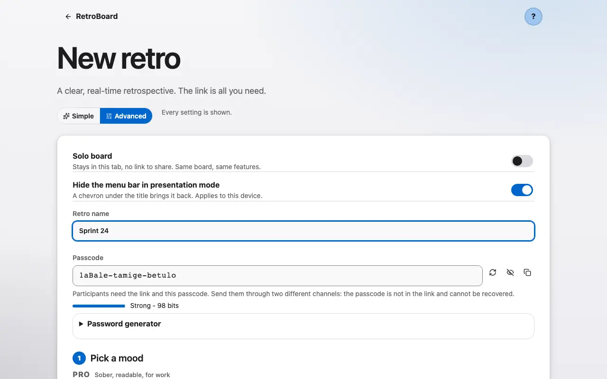
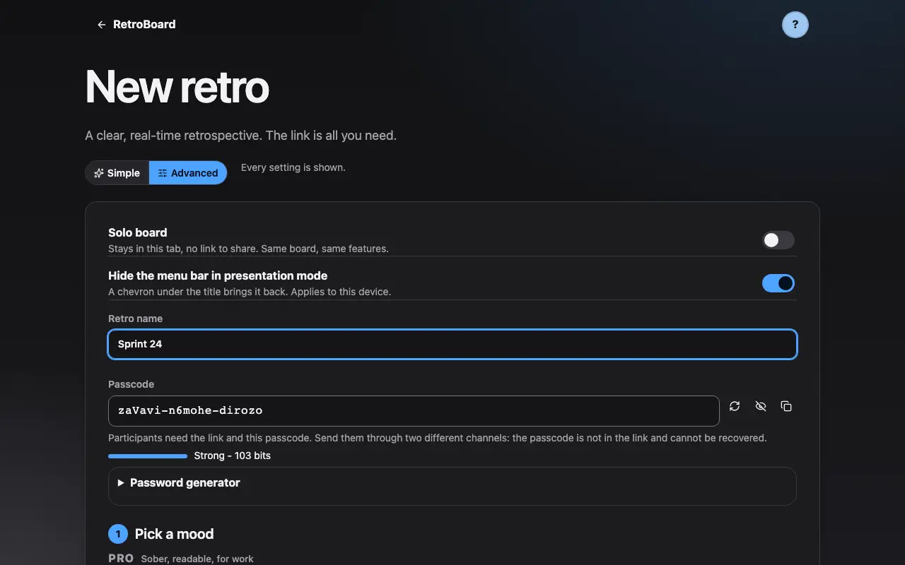
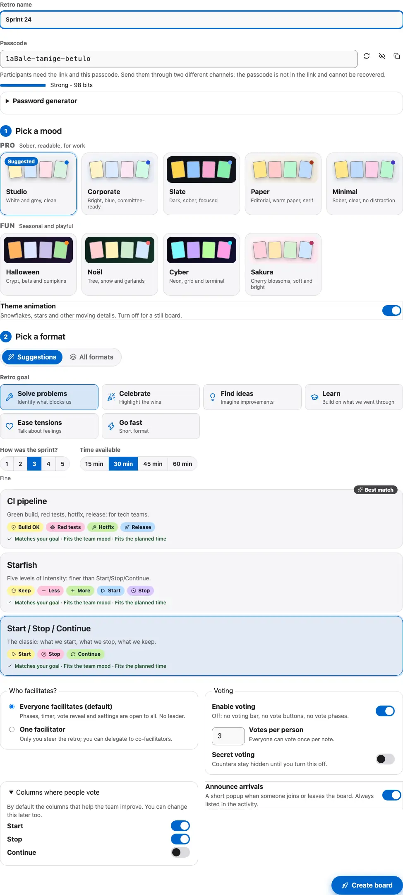
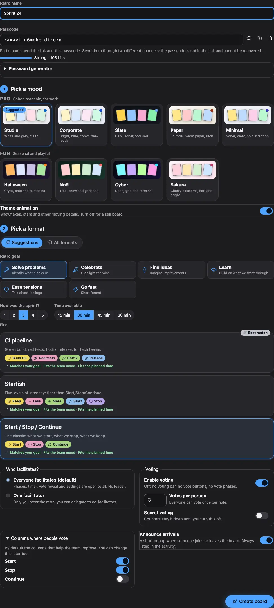

Create a board
A board takes seconds to create: a title, a format, a theme. No account is needed.
1 Give the board a title and pick a retro format.
Open the creation page, give the board a title (for example "Sprint 24") and pick a retro format: Start, Stop, Continue, Went well, Sailboat and many more. A passcode is suggested by default: it protects access to the board on top of the link. In advanced mode, a board belongs to a team: that team starts its next board with its last format, theme and agenda, and proposes the next number of the series ("Sprint 24" becomes "Sprint 25"). With two teams or more, a team switcher appears above your recent boards on the home page and in your profile. Pick a team to show only its boards; it also becomes the team of your next board. "All teams" shows everything again. Teams stay on this device: nothing about them is sent to a server. To bring a team to another device, open your profile, then "Share a team": copy the encrypted team link or download the .retroteam file. It carries the team name, look and settings, never a board, a note or an action. On the other device, open the link or the file and the team joins your list. Your boards are kept in a library on this device, sealed with a key only your browser holds: open "My boards" (from your profile or the board switcher) to reopen, archive or forget one. The boards you create join it by themselves; a board you only joined by link stays out until you press "Save to my library" (or turn on "Save boards I join" in your profile).


2 The facilitator picks the theme and the whole team sees it.
The facilitator picks the theme and it applies to the whole team. Everyone keeps the choice between the light and the dark variant for themselves.

